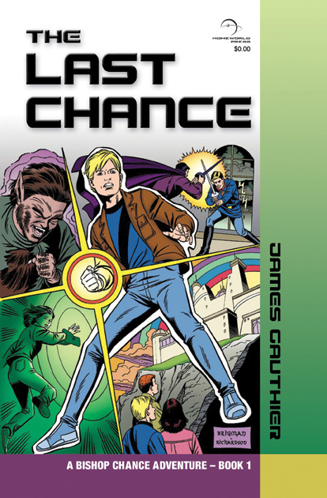
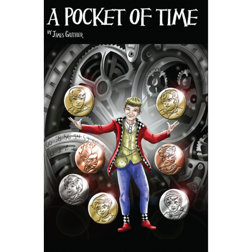
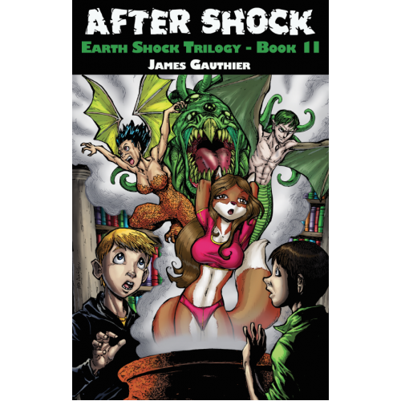
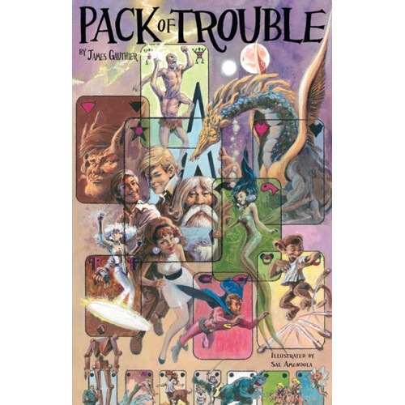

HISTORIC RELEASE // DUMAREST OF TERRA VOL. 33 (2008)
HISTORIC RELEASE // DUMAREST OF TERRA VOL. 33 (2008)
After a 23-year wait following The Return (1985), Homeworld Press proudly published the First American Edition of E.C. Tubb’s 33rd and final Dumarest novel, featuring wrap-around cover artwork by Doug Klauba. Explore our restored 33-volume bibliography with direct Amazon, Audible, and collector market links.
ISBN 978-0985928407 // 2012 CENTENNIAL
Featuring over 80 interiors and cover illustration by veteran DC Comics artist Sal Amendola.

LEGACY ROUTE // /CHANCE.HTM
Written by Homeworld Press founder James Gauthier and illustrated by Sal Amendola.

BISHOP CHANCE BOOK I // ILLUSTRATED PULP SCI-FI
Original Homeworld Press edition by James Gauthier, with interior pen-and-ink plates by Sal Amendola. Preserved at our historical /chance.htm route.

THE EARTH SHOCK TRILOGY // FUTURE EARTH SAGA
A three-volume speculative adventure following humanity across a fractured, post-cataclysmic Earth.

ILLUSTRATED NOVEL & CLASSIC COMIC STRIPS
Exploring the intersection of illustrated prose fiction and classic American syndicated comic strip collections.